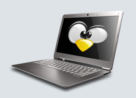

Auf DVD: Achtmal Linux
Im Zeichen Ubuntus: Diese DVD dreht sich um Ubuntu 17.10, das eine Kehrtwende dieser Distribution markiert. Wie schon im April 2017 angekündigt, lässt Ubuntu 17.10 die Eigenentwicklung Unity auf dem Desktop fallen und wendet sich in seiner Hauptausgabe Gnome zu. Eine Gnome-Ausgabe Ubuntus gab es bereits vorher und diese wurde mit der regulären Ubuntu-Version verschmolzen. Bei den offiziellen Ubuntu-Varianten auf Heft-DVD geht es weiter wie bisher: Das besonders einsteigerfreundliche Ubuntu Mate 17.10 aktualisiert den Mate-Desktop mit neuen Funktionen. Ubuntu Budgie 17.10 ist der jüngste Zugang im Kreis der offiziellen Ubuntu-Ausgaben und präsentiert den Budgie-Desktop als Alternative zu Gnome. Für ältere Rechner ist Lubuntu 17.10 gut geeignet, dessen sparsame LXDE-Arbeitsfläche nur wenig Systemressourcen verlangt. Lubuntu liegt nochmal in der 32-Bit-Ausgabe auf Heft-DVD vor. Wer an Ubuntu nicht interessiert ist, findet mit Open Suse Tumbleweed eine Open-Suse-Version, die als Rolling Release konzipiert ist. Einen sanften Einstieg in das Thema Arch Linux bietet Antergos 17.10 mit seinem komfortablen, grafischen Installer. Eine Reihe von Desktop-Umgebungen stehen hier bei der Installation zur Auswahl. Das überarbeitete Mini-System Porteus 3.2.2 bietet eine Umgebung zum Surfen mit mehreren Browsern und mit Gparted Live 0.30 ist die neueste Ausgabe des Partitionierers auf DVD, der für Linux- und Windows-Anwender gleichermaßen nützlich ist. Alle Systeme sind übrigens auch als originalgetreue ISO-Datei auf DVD untergebracht.
Detaillierte Beschreibungen der Distributionen finden Sie hier.

Extras und Tools:
Zur Reparatur und Fehleranalyse bietet das Multibootmenü der DVD in der Rubrik „Extras und Tools“ eine Reihe an kleineren Live-Systemen und startfähigen Werkzeugen. Mit von der Partie ist die Super Grub Disk 2, mit der Sie ein liegen gebliebenes Linux-System ohne Bootloader wieder starten können. Der Plop Bootmanager hilft dabei, von USB-Laufwerken zu booten, auch wenn das ältere BIOS dies nicht unterstützen sollte. Das Hardware Detection Tool (HDT) zeigt die Ausstattung eines PCs. Memtest 86+ 5.01 testet den Speicher des PCs und DBAN 2.3 löscht Festplatten zuverlässig. Zur Übersicht der „Extras und Tools“ mit Mini-Anleitungen geht es hier.
Jahrgang 2017:
 Die LinuxWelt begleitet die Entwicklung von Open-Source-Software, Linux, Distributionen aus dem Blickwinkel von Anwendern und Administratoren seit 2004. Als Anerkennung für treue Leserinnen und Leser liegt der komplette Jahrgang 2017 der LinuxWelt mit auf Heft-DVD. Die einzelnen Ausgaben liegen jeweils als PDF-Datei vor und liefern unkompliziert Lesestoff und durchsuchbares Material für das eigene digitale Archiv.
Die LinuxWelt begleitet die Entwicklung von Open-Source-Software, Linux, Distributionen aus dem Blickwinkel von Anwendern und Administratoren seit 2004. Als Anerkennung für treue Leserinnen und Leser liegt der komplette Jahrgang 2017 der LinuxWelt mit auf Heft-DVD. Die einzelnen Ausgaben liegen jeweils als PDF-Datei vor und liefern unkompliziert Lesestoff und durchsuchbares Material für das eigene digitale Archiv.
Wahl-O-Mat:
Gerade Einsteiger stehen vor der Frage, welche Linux-Distribution zum eigenen Wissensstand passt und zum anvisierten Einsatzzweck. Linux-Anwender, die genau das perfekte Linux-System suchen haben nicht wenig damit zu tun, Vor- und Nachteile verschiedener Distributionen abzuwägen. Und nicht jeder hat die gleichen Auswahlkriterien: Wer gerade erst Windows hinter sich lässt, braucht eine einsteigerfreundliche Distribution. Administratoren setzen auf Stabilität und fortgeschrittene Linux-Anwender bevorzugen hochaktuelle Programmversionen sowie eine breite Auswahl. Als Entscheidungshilfe ist ab jetzt auf jeder DVD der Wahl-O-Mat mit von der Partie. Die wichtigsten Linux-Distributionen sortiert ein Fragebogen oder eine interaktive Tabelle nach Kriterien wie Desktop, Server, Benutzerfreundlichkeit, Dokumentation, Aktualität und Paketauswahl.
Neues LinuxWelt E-Book 1/18
 Linux-Wissen auf über 300 Seiten:
Viel hilft viel: Auf der Heft-DVD finden Sie ein besonders umfangreiches, neu zusammengestelltes E-Book, das die wichtigsten Grundlagenartikel aus früheren Heften in einer PDF-Datei bündelt. Hier erfahren Sie Wesentliches über Linux, Administration, die Grundlagen des Betriebssystems und zu Open-Source-Programmen. In mehreren Rubriken wie Hardware, System, Sicherheit, Software, Netzwerk und anderen sind die nach wie vor aktuellen Artikel nach Thema gegliedert. Das PDF-Dokument lässt sich unter Linux, Windows und Mac OS X lesen; alles was Sie brauchen, ist ein PDF-Reader wie Evince (Gnome), Okular (KDE) oder Firefox.
Linux-Wissen auf über 300 Seiten:
Viel hilft viel: Auf der Heft-DVD finden Sie ein besonders umfangreiches, neu zusammengestelltes E-Book, das die wichtigsten Grundlagenartikel aus früheren Heften in einer PDF-Datei bündelt. Hier erfahren Sie Wesentliches über Linux, Administration, die Grundlagen des Betriebssystems und zu Open-Source-Programmen. In mehreren Rubriken wie Hardware, System, Sicherheit, Software, Netzwerk und anderen sind die nach wie vor aktuellen Artikel nach Thema gegliedert. Das PDF-Dokument lässt sich unter Linux, Windows und Mac OS X lesen; alles was Sie brauchen, ist ein PDF-Reader wie Evince (Gnome), Okular (KDE) oder Firefox.
In diesem extragroßen E-Book zur Ausgabe 1/2018 finden Sie unter anderem viele Beiträge aus der letzten Ausgabe zum Thema "Linux für Systembastler". Zudem gibt es eine neue Rubrik zu Linux-Distributionen, in der sich die wichtigsten Linux-Systeme mit ihren Besonderheiten vorstellen.
Was das E-Book sonst noch bietet, erfahren Sie hier.
Oder öffnen Sie das E-Book einfach direkt über diesen Link.
openSUSE®, das openSUSE® Logo und "SUSE Linux"® sind eingetragene Warenzeichen von Microfocus®. Ubuntu®, Kubuntu®, Xubuntu® sind eingetragene Warenzeichen von Canonical®. Fedora® und "Red Hat"® sind eingetragene Warenzeichen von Red Hat® Inc. Linux® ist ein eingetragenes Warenzeichen von Linus Torvalds. Der Linux-Pinguin wurde von Larry Ewing erstellt.